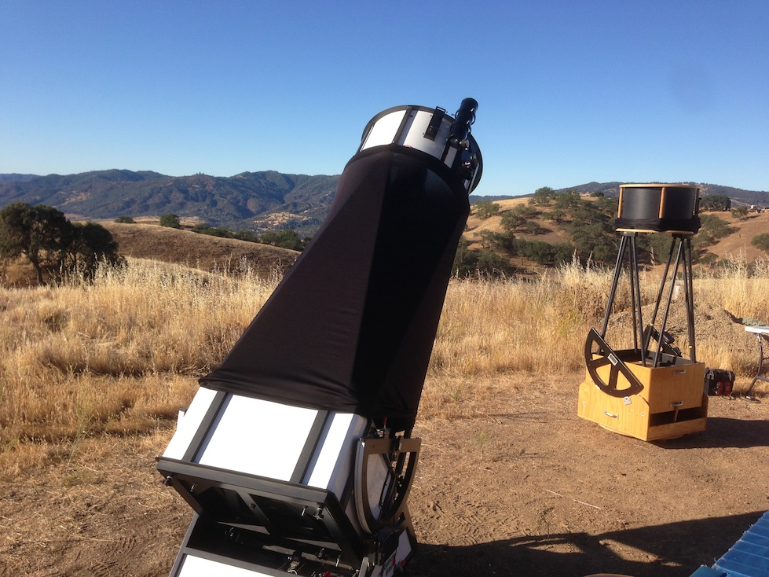

OR 8/23/14: Willow Springs
by Steve Gottlieb
|
On August 23 2014, I met Mark Wagner and Mark Johnston at Bob Ayers' Willow Springs property, roughly 30 miles southeast of Hollister and perhaps 20 miles northwest of Pinnacles
National Park. Here's the view from this 3000 ft site, looking south over the rolling hills of rural San Benito county with my scope in the foreground (24-inch f/3.7 Starstructure)
along with Mark Johnston's 18" f/3.7 Starmaster. Wagner and I had some equipment issues during set-up -- Mark discovered he forgot a battery as well as his finder and I had
electrical issue causing a short in my Servocat system. Fortunately, with some help from Mark Johnston the issues were resolved before it was fully dark.
Observing conditions were good with no wind, clouds or moisture though the transparency was on the low end of typical SQM readings (21.4-21.6) at this site (situated in a dark blue light pollution zone). I observed until 3:00 and then crashed out in my minivan. All in all, a very relaxing, productive evening! The following Wednesday I was off again to observe at Lake Sonoma - more on that adventure in my next report.  |
|
This fairly bright gc contains a very bright core and an irregular 2' halo. At 375x, stars stream out to the east and west creating an impression of elongation.
The core is very lively and a few brighter stars are clearly resolved, though packed together very tightly. Roughly 20 stars are resolved in the halo. At 500x, 30-35 stars are
resolved (many popping in/out of view) including 8-10 in a clump at the center and close to the core. A single brighter star is just south of the core and a nice pair (~3"
separation) is in the halo on the NNE side. A string of stars extends out of the cluster to the north. Easily visible in the 80mm finder at 25x and the finder field contains
Picked up at 200x as a very low surface brightness 2.0'-2.5' glow, peppered with a few stars and a slightly brighter "core" region. At 375x-500x, the brightest mag
14.6 star is on the northwest side with a mag 14.8 star 0.6' SE . A 12" pair of mag 15.2/15.9 stars is near the geometric center (20" SE of the mag 14.8 star) and a mag 16-16.5
star was glimpsed on the northeast side. A brighter mag 14 star is off the northwest side and probably not a member.
This bright, compact triplet is part of the
NGC 7284 is the western component of this double system. At 375x, it appeared bright, small, round, high surface brightness, ~0.4' diameter. The core of
|